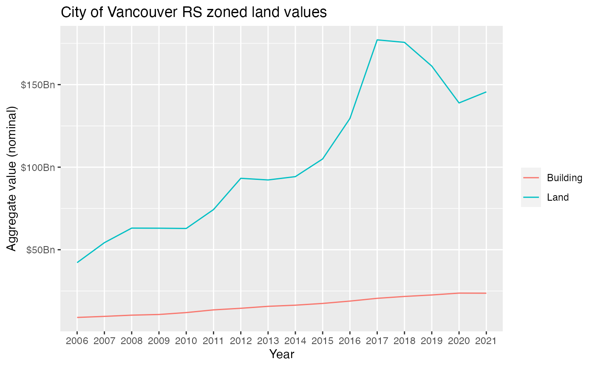

library(VancouvR)
library(dplyr)
#>
#> Attaching package: 'dplyr'
#> The following objects are masked from 'package:stats':
#>
#> filter, lag
#> The following objects are masked from 'package:base':
#>
#> intersect, setdiff, setequal, union
library(ggplot2)tax_data <- get_cov_data(dataset_id = "property-tax-report",where="tax_assessment_year=2019") %>%
mutate_at(c("current_land_value","current_improvement_value"),as.numeric)
#> Downloading data from CoV Open Data portal
property_polygons <- get_cov_data(dataset_id="property-parcel-polygons",format = "geojson")
#> Downloading data from CoV Open Data portalplot_data <- property_polygons %>%
left_join(tax_data,by=c("tax_coord"="land_coordinate")) %>%
mutate(rlv=current_land_value/as.numeric(sf::st_area(geometry))) %>%
mutate(rlvd=cut(rlv,breaks=c(-Inf,1000,2000,3000,4000,5000,7500,10000,Inf),
labels=c("<$1k","$1k-$2k","$2k-$3k","$3k-$4k","$4k-$5k","$5k-$7.5k","$7.5k-$10k",">$10k"),
ordered_result = TRUE))
#> Linking to GEOS 3.7.2, GDAL 2.4.2, PROJ 5.2.0
ggplot(plot_data) +
geom_sf(aes(fill=rlvd),color=NA) +
scale_fill_viridis_d(option="magma",na.value="darkgrey") +
labs(title="2019 relative land values",fill="Value per m^2",caption="CoV Open Data") +
coord_sf(datum=NA)